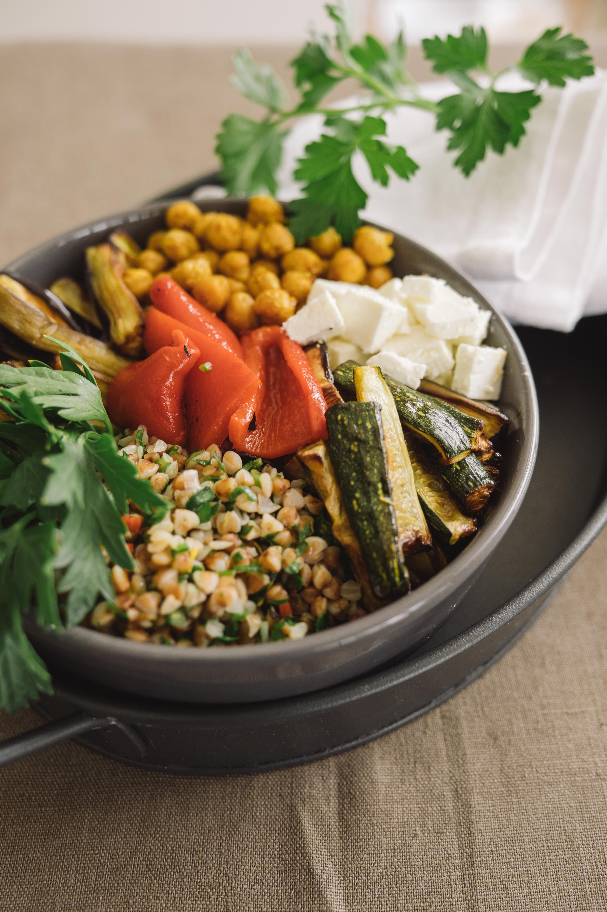
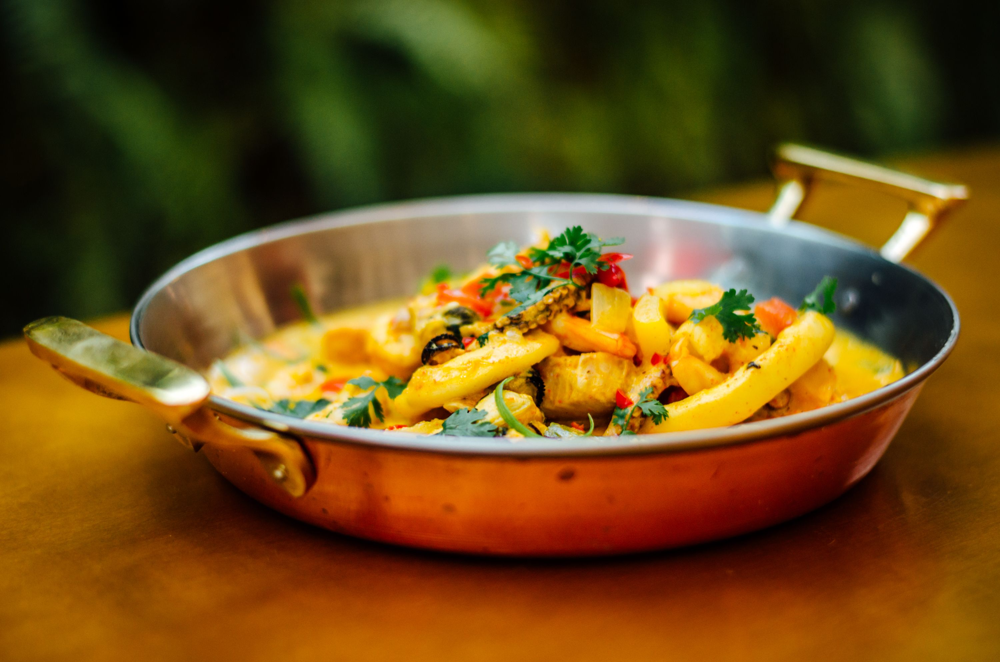
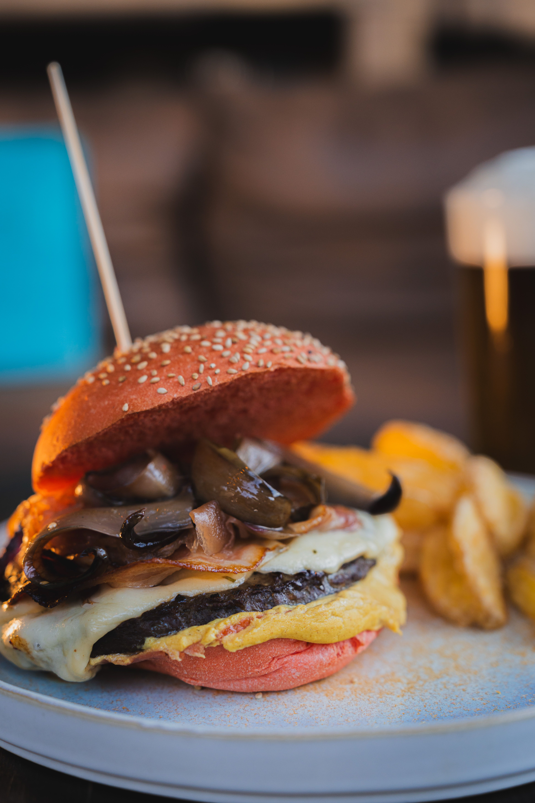
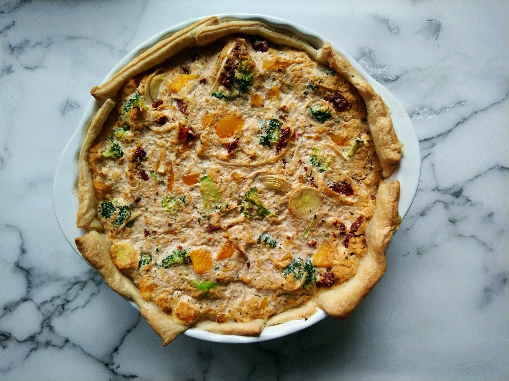
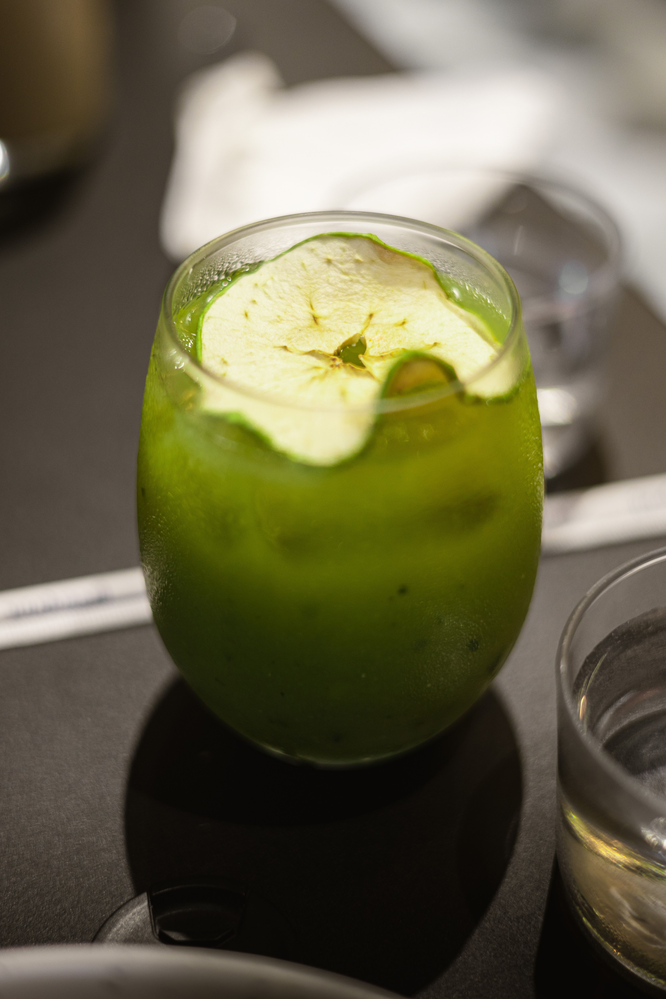
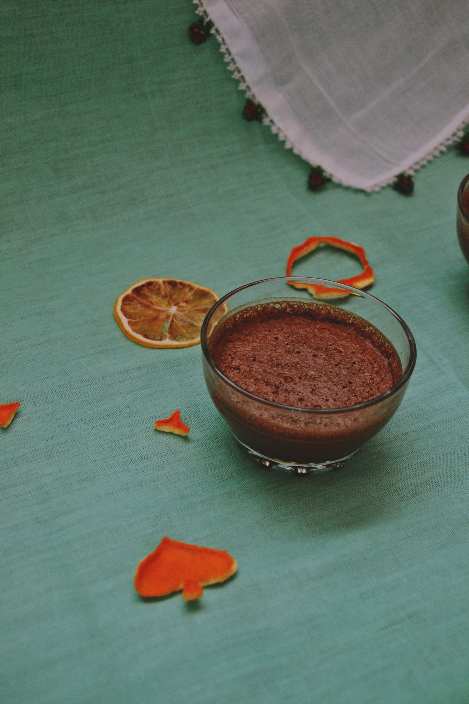

Origem
Nascemos em Caxias com o propósito de mostrar que comida vegetariana pode ser saborosa, afetiva e cheia de identidade maranhense.
Caxias Shopping · Piso L1
Uma experiência 100% vegetariana, com opções veganas, ingredientes sazonais e uma cozinha que valoriza o frescor, a origem e o cuidado em cada preparo.
Uma experiência 100% vegetariana, com opções veganas, ingredientes sazonais e uma cozinha que valoriza o frescor, a origem e o cuidado em cada preparo.
Nossa história
Nascemos em Caxias com o propósito de mostrar que comida vegetariana pode ser saborosa, afetiva e cheia de identidade maranhense.
Um cardápio autoral que une ingredientes da terra a técnicas contemporâneas, servido em um ambiente aconchegante dentro do Caxias Shopping.
Trabalhamos com produtores locais, reduzimos o desperdício e cuidamos de cada prato como se fosse para alguém da nossa família.
O que servimos

Grão-de-bico temperado, abóbora assada, quinoa e molho tahine.
R$ 32,90
Banana da terra, leite de coco, dendê e pimentão, com arroz e farofa.
R$ 38,90
Blend de lentilha e cogumelos, queijo vegano, rúcula e maionese de ervas.
R$ 29,90
Massa integral, legumes da estação e farofa crocante de castanha.
R$ 27,90
Couve, abacaxi, limão e gengibre, feito na hora.
R$ 14,90
Sobremesa vegana à base de cacau 70%, abacate e leite de coco.
R$ 16,90Tire suas dúvidas
Sim, todo o cardápio é vegetariano, com diversas opções veganas identificadas no menu.
Sim, entregamos na região central de Caxias com equipe própria e também por aplicativos parceiros.
Não é obrigatório, mas recomendamos reservar em fins de semana e feriados pelo WhatsApp.
Sim, diversos pratos podem ser adaptados. Informe a restrição ao garçom ou no pedido online.
Todos os dias de 11h às 22h.
Aceitamos Pix, dinheiro, cartão de débito e crédito.
Fale com a gente